Odd Fellow Says Hello
November - December 2024
Responsibilities
Designer · Programmer
Tools
Bash · OpenAI API · HTML · CSS · Javascript Typescript
One’s a little different—can you spot the Odd Fellow?
Put your wits to the test with Odd Fellow Says Hello, a game of wordplay and fun! In each round, you’ll face four words, but one doesn’t belong. Is it a trick of meaning or a subtle twist of context? Gather your friends or challenge yourself to find the Odd Fellow before time runs out. Perfect for quick thinkers, word lovers, and anyone who loves a clever challenge.
Are you sharp enough to spot the odd fellow? Odd fellow says hello!
Note: If the application is temporarily unavailable or not functioning as expected, it is likely due to an issue with the AI API connection or usage limits. I am actively working on resolving this and restoring full functionality as soon as possible.
In the meantime, please refer to the video walk through to understand the gameplay. Thank you!
What was the inspiration?
I wanted to explore artificial intelligence in a way that felt purposeful rather than superficial, using it where it genuinely adds value instead of treating it as a novelty feature. This project became an opportunity to question what makes AI a meaningful tool in interactive systems and creative technology.
In Odd Fellow Says Hello, the OpenAI API functions as a word-generation engine that creates groups of four related terms while introducing a subtle “odd one out.” Each set is designed so that the difference is not obvious, encouraging players to think critically about categorization, language, and ambiguity. By embedding AI directly into the game’s core logic, the system can generate continuous, infinite rounds without requiring manually curated word sets, demonstrating a productive collaboration between human designers and machine intelligence.
Key Features
Countdown timer
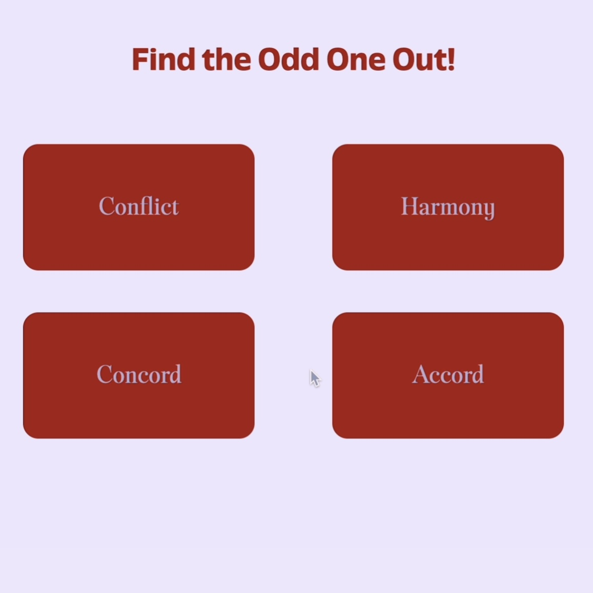
AI generated word group
Point counter
Hover effect
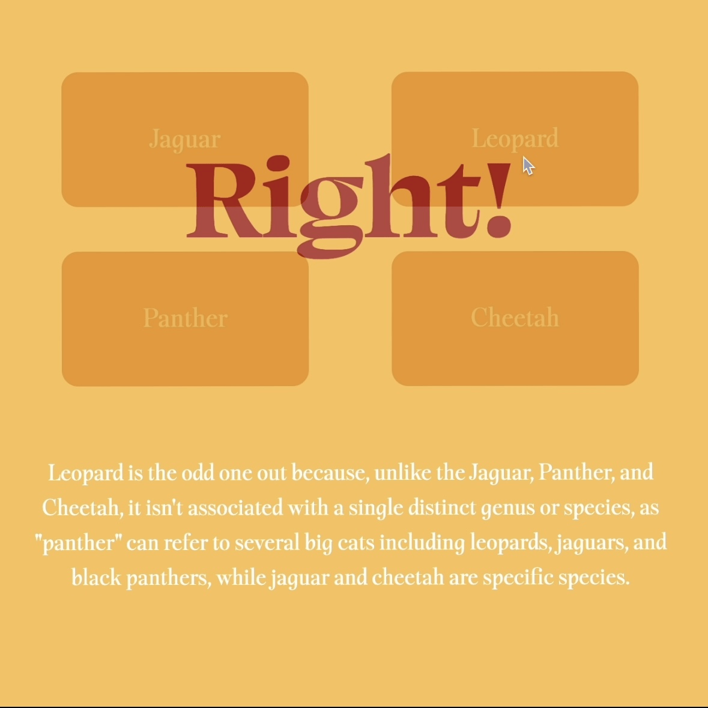
Right or wrong answer indicator
How was Odd Fellow Says Hello developed?
Phase 0: Ideation
I am interested in brain-teaser and word-based games, and this project explores how large language models can support the creation of these systems. It shows the intentional use of AI as a creative tool in designing generative word-game mechanics.

Web-based game flow chart

Sketch and features

Color palette and low-fidelity mockup
Phase 1: Proof of Concept
In this phase, I integrated the OpenAI API to test the viability of the concept. I developed structured prompts to enable consistent, continuous word generation and displayed the results directly within the interface.
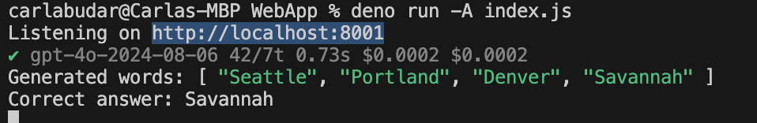
Generated words are shown in the terminal, it also separates teh odd one out.
Showing word options on the interface with buttons for users to choose.
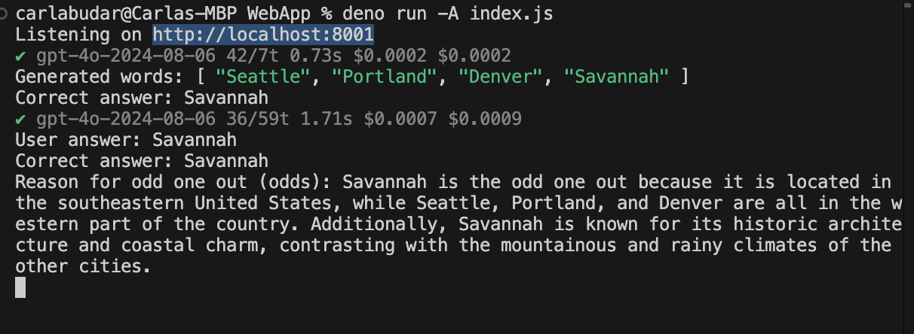
The LLM then checks if the user answer and the right answer is reflective. While also providing reasoning behind the answer.
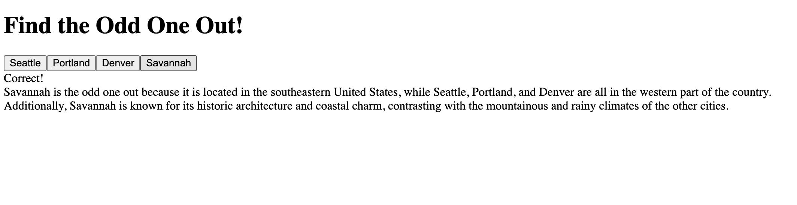
The reasoning is shown onto the interface after the users lock in their answers.
Phase 2: Work in Progress
In this phase, I started building on my User Interface design. Keeping it simple, streamlined, yet fun to interact with. I was inspired by the New York Times game interfaces, which is reflected through my design here.
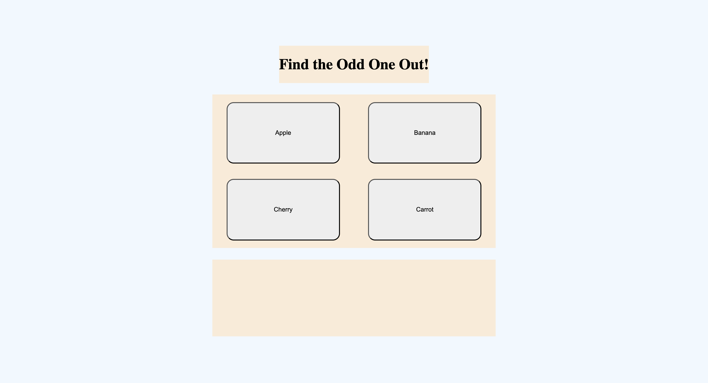
Word options are shown in the center of the screen as big boxes to be the main focus of the page.
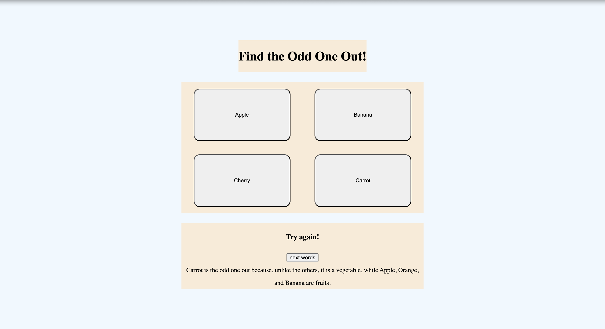
The answer reasonings are shown below the word options. I also added a button to generate a new set of words.
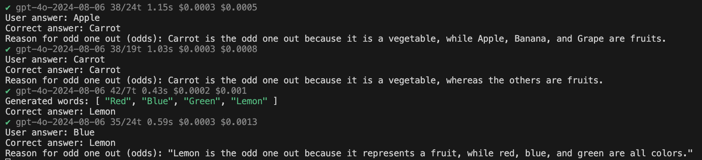
This terminal capture shows early iterations of the system, where some word groups appeared overly distinct (for example, Red, Blue, Green, Lemon). I refined the prompt to produce subtler and less predictable groupings.
Phase 3: Final Web App
Finally, after the system is proven to be working effectively, I designed the interface to be fun and playful, yet not too overwhelming, making it accessible to players of all ages.
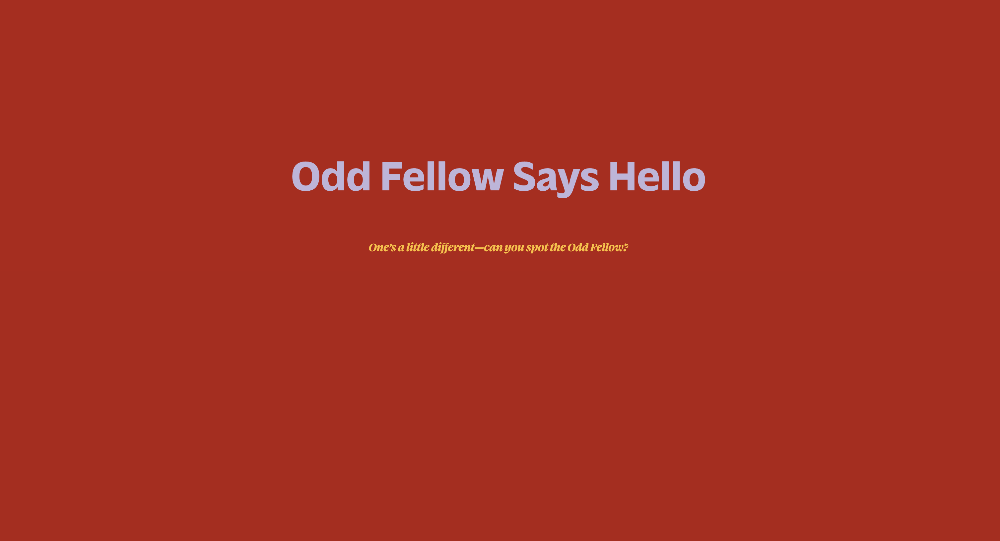
Landing page with game title and tagline
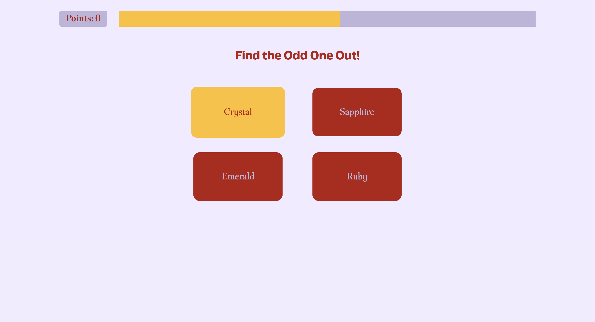
I added a countdown timer in the main game section to add a sense of urgency, a point counter to keep track of right answers and to motivate users to be more competitive, and a hover effect on each word box to make the page feels more interactive and engaging.
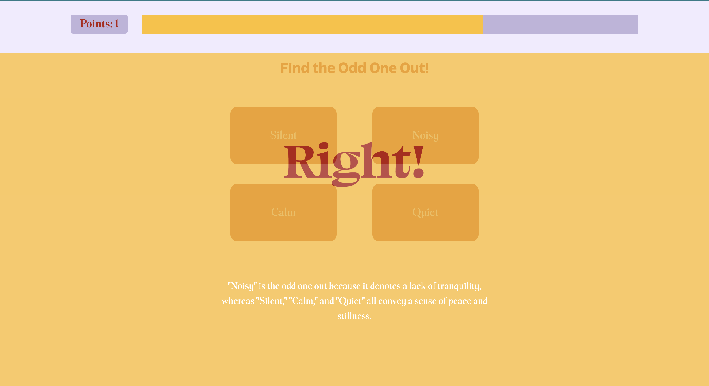
When players chose the right answer, this indicator screen will pop up. A point will be added to the point counter as well as show why the chosen answer was the correct answer.
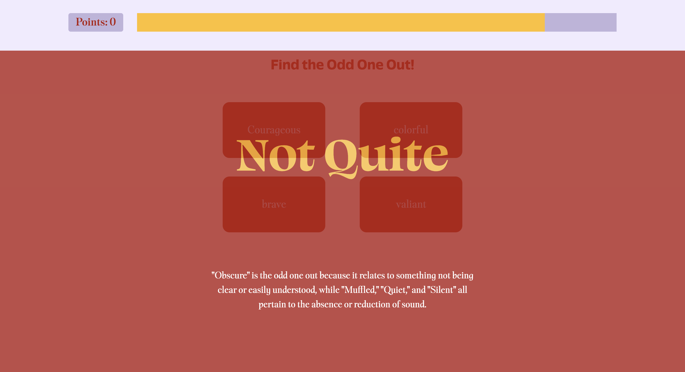
When players select an incorrect answer, a red overlay appears with feedback explaining the correct choice and the reasoning behind it. This feature supports learning by helping younger players expand their vocabulary and understand word groupings.
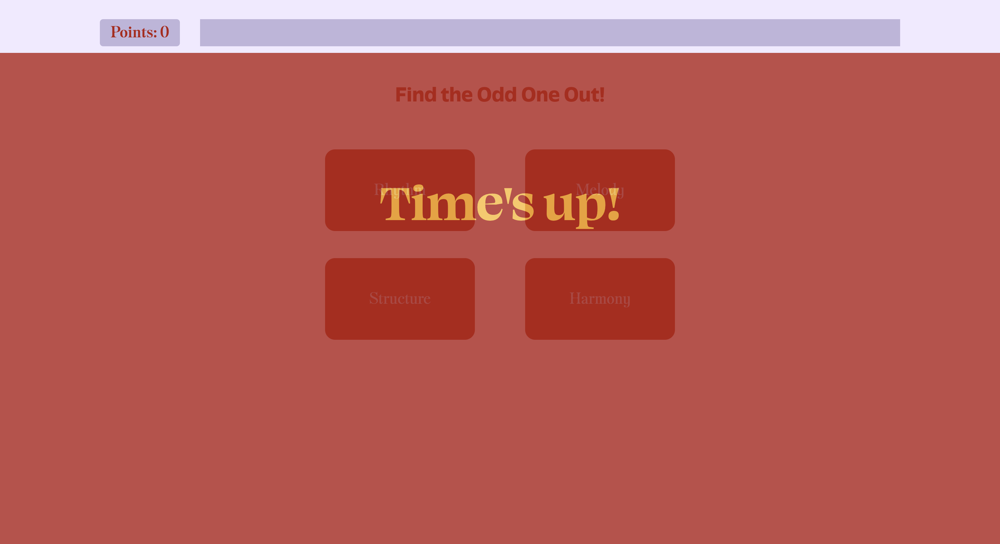
When a player fails to choose an option before the countdown timer runs out, this Time's Up screen will appear and resets the point counter to 0. This feature enhances the time-based rule, adding a fun yet thrilling feeling for the players.
Key Learnings
1. Intentional Use of AI
Rather than relying on AI just as a "must-have" feature, I treated it as a design material, that has it's own specific and effective use.
2. Emotion-Driven Game Design
Visual feedback, timers, and scoring systems were used deliberately to create tension, reward, and momentum, shaping how players feel as they move through each round.
3. Accessible, All-Ages Interaction
The interface was streamlined to reduce cognitive load while remaining playful, ensuring the game is approachable for both younger players and adults.
4. Motion as a Design Tool
Animations and hover states were integrated not just for decoration, but to guide attention, reinforce feedback, and increase engagement.
5. Iterative Prototyping with AI Systems
Continuous testing and prompt refinement were essential to achieving believable word groupings and maintaining fairness in the game logic.
6. Educational Feedback Through Play
Incorrect answers triggered explanatory overlays, turning mistakes into learning opportunities and reinforcing vocabulary development through gameplay.